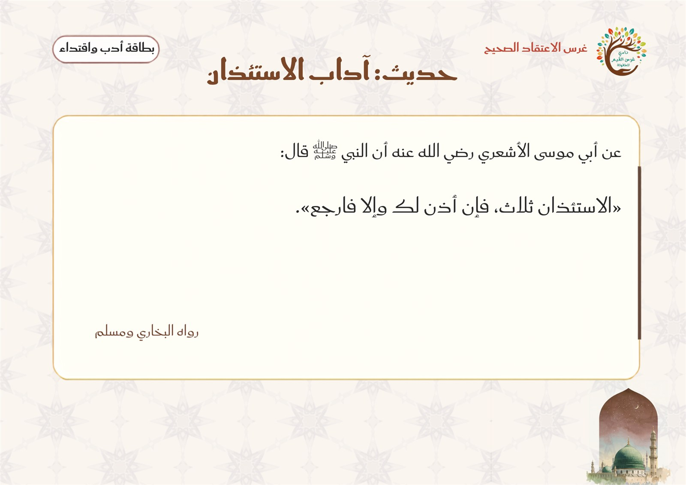
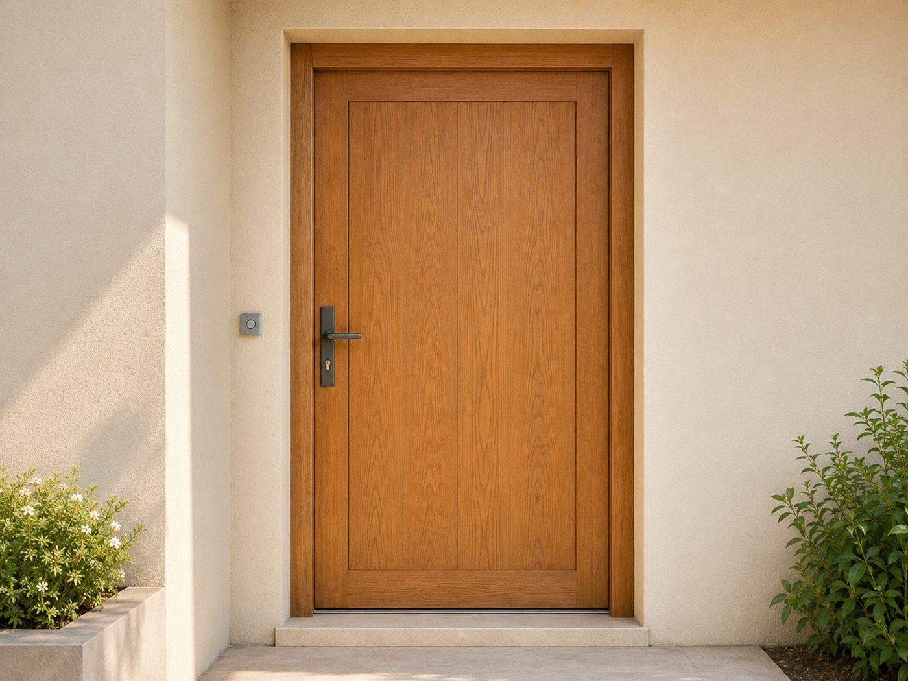

وحدة العائلة — اللقاء الثاني أستأذن كما علّمني النبي ﷺ
المرحلة: تمهيدي (5–6 سنوات) · المجلس: مجلس الأدب والاقتداء · اليوم: الثاني
المدة: نصف ساعة
سؤال التركيز
ماذا أفعلُ خطوةً خطوةً حين أستأذنُ الدخول، وإن لم يُؤذَن لي؟
بوصلةُ اللقاء: تفتح به المعلمةُ الحوار وتعود إليه عند الغلق. يقيسه سؤالُ التغذية الراجعة الأول ومؤشراتُ النجاح.
جوهر اللقاء
أقف بجانب الباب، أطرق طرقًا خفيفًا مسموعًا، أقول: السلام عليكم، أأدخل؟ وأذكر اسمي إذا سُئلت: من؟ ثم أنتظر الإذن. أكرّر طلب الإذن حتى ثلاث مرات، فإن لم يؤذن لي رجعتُ بهدوء اقتداءً بالنبي ﷺ وحفظًا لخصوصية أهل المسكن.
تظهر موسّعةً في «المعنى المركزي» بسير اللقاء؛ لو لم يبقَ من الدرس إلا جملةٌ فهي هذه.
ورقة التدريس السريعة — خطوات اللقاء أثناء الدرس
① تهيئة وبداية اللقاء ٧ د
إشارة بدء اللقاء: الاستماع إلى إشارة أدب واقتداء الصوتية المعتمدة، ثم جواب الإشارة.
قوانين الفصل الخمسة.
مراجعة سريعة: معنى الاستئذان ومواقف الحاجة إليه.
② بناء وسير اللقاء ١٥ د
آيتا النور والوقوف جانب الباب لا أمام فتحته.
الطرق اللطيف والسنة اللفظية: «السلام عليكم، أأدخل؟».
التعريف بالاسم، ثم الانتظار والرجوع بأدب إن لم يؤذن.
المعنى المركزي، ثم تصحيح فهم الطفل.
③ إغلاق وتقويم ٨ د
النشاط المصاحب: «باب الأدب» وترتيب بطاقات الخطوات.
أسئلة التقويم: أين أقف · ماذا أقول · متى أدخل.
دعاء كفارة المجلس وختام اللقاء.
ربط الأسرة: يتدرّب الطفل مرة على باب غرفة مناسبة في البيت: يقف جانب الباب، يطرق برفق، ويقول «السلام عليكم، أأدخل؟» وينتظر الإذن.
ورقةٌ مرجعية سريعة أثناء الدرس — الخطوات فقط دون الأهداف والزيادات؛ والنصّ الكامل في تبويب «دليل الدرس كامل».
مسار بداية اللقاء
① تهيئة
إشارة بدء اللقاء — أدب واقتداء
السلام عليكم ورحمة الله وبركاته يا أحباب النبي ﷺ، هيا نتهيّأ لنعرف أدبنا في هذا اللقاء.
منهجية الإشارة: تبدأ المعلمة بتحية الإسلام والترحيب، ثم تدعو الأطفال للاستماع والمشاهدة دون أن تُسمّي اللقاء؛ فيستمعون إلى إشارة بدء لقاء أدب واقتداء الصوتية المعتمدة ويتعرّفون على لقائهم بأنفسهم، ثم تؤكّد المعلمة: «نعم، لقاؤنا الآن هو أدب واقتداء، نتعلّم فيه آداب الإسلام ونقتدي برسول الله ﷺ». وبعد التعرّف تعرض صورة الطفلة عند الباب وبطاقات الخطوات المقلوبة تمهيدًا لدرس اليوم: كيف نستأذن كما علّمنا النبي ﷺ.
▶ فيديو إشارة بدء لقاء أدب واقتداء (الإشارة المعتمدة)
سؤال الإشارة: ما هو لقاؤنا الآن؟ جواب الأطفال: «لقاؤنا أدب واقتداء، نتعلم فيه آداب الإسلام ونقتدي برسول الله ﷺ».
ربط بالتوحيد: الله يدبّر الكون، وقد أنعم علينا بالمسكن، ونحن نحفظ نعمته بحسن الأدب داخله وعند أبوابه.
افتتاح اللقاء بذكر الله
تبدأ المعلمةُ بـالبسملة والحمدلة والصلاةِ على النبيّ ﷺ، ثمّ تفتتح لقاء الأدب بذكرِ الله وطلبِ العون على التحلّي بالأدبِ وحُسنِ الخُلق، وتُردّد لجذب انتباه الأطفال: «انتباه… انتباه… حان وقتُ الأدبِ الجميل»، فيتهيّؤون للإنصات.
الحزمُ مع الهدوء: تُدير المعلمةُ اللقاءَ بحزمٍ هادئ — صوتٌ لطيفٌ، وحدودٌ واضحة، وابتسامةٌ محتسبة — دون شدّةٍ تُنفّر ولا فوضى تُشتّت.
قوانين الفصل
🧹 أحافظ على نظافة فصليإماطة الأذى عن الطريق صدقة.
🔔 أستمع وأنصتفلا أقاطع الآخرين.
🔒 أحفظ لساني ويديالمسلم من سلم المسلمون من لسانه ويده.
🪑 أجلس جلسة صحيحةفي المساحة المخصصة لي.
💬 أرفع يدي للمشاركةالسؤال للجميع والإجابة لمن تختاره المعلمة.
مراجعة سريعة
ما معنى الاستئذان؟ واذكر مكانًا تستأذن قبل دخوله. وماذا تفعل إذا أردت استعمال ألوان صديقك؟ وهل طرق الباب وحده يعني أنني أستطيع الدخول؟ ولماذا؟
سير اللقاء
② سير وإغلاق
المرحلة الأولى — البناء ومعنى الاستئذان: تراجع المعلمة معنى الاستئذان: طلب الإذن، وتؤكد أن الباب المغلق لا يُفتح قبل أن يسمح صاحبه. ثم تقرأ قول الله تعالى: ﴿يَا أَيُّهَا الَّذِينَ آمَنُوا لَا تَدْخُلُوا بُيُوتًا غَيْرَ بُيُوتِكُمْ حَتَّىٰ تَسْتَأْنِسُوا وَتُسَلِّمُوا عَلَىٰ أَهْلِهَا﴾ [النور: ٢٧]، وتبسّط المعنى: نستأذن ونسلّم قبل الدخول.

بطاقة آداب الاستئذان التي تعرضها المعلمة — الآيتان والخطوات النبوية
قراءة حديث آداب الاستئذان بصوت واضح
الوقوف عند الباب: تعرض صورة الوقوف عند الباب، وتوضح أن النبي ﷺ كان يقف من ركن الباب الأيمن أو الأيسر؛ حتى يحفظ نظره وخصوصية أهل البيت. فأقف جانب الباب لا أمام فتحته.
الطرق اللطيف والسنة اللفظية: تنمذج المعلمة الطرق الخفيف المسموع، وتقارنه مرة واحدة بطرق مرتفع دون إخافة الأطفال، ثم يسمّي الأطفال الطرق اللطيف. ثم تقول السنة اللفظية: «السلام عليكم، أأدخل؟» ويرددها الأطفال بوضوح وهدوء.
التعريف بالاسم: تسأل من خلف الباب: مَن؟ وتعرض بطاقتي «أنا» و«سارة». يختار الأطفال الاسم؛ لأن كلمة «أنا» لا تعرّف بصاحبها، فأذكر اسمي إذا سُئلت: من؟
الانتظار والرجوع بأدب: تعرض بطاقة الانتظار. لا يلمس الطفل المقبض ولا يفتح الباب حتى يسمع الإذن. ثم تقرأ: ﴿وَإِنْ قِيلَ لَكُمُ ارْجِعُوا فَارْجِعُوا هُوَ أَزْكَىٰ لَكُمْ﴾ [النور: ٢٨]، وتقول: إذا لم يؤذن لي بعد ثلاث مرات أو قيل لي ارجع، أرجع دون غضب. و«الاستئذان ثلاث» يعني تكرار طلب الإذن مع انتظار مناسب بين كل مرة، لا ضرب الباب ثلاث ضربات سريعة.
المعنى المركزي: أقف بجانب الباب، أطرق طرقًا خفيفًا مسموعًا، أقول: السلام عليكم، أأدخل؟ وأذكر اسمي إذا سُئلت: من؟ ثم أنتظر الإذن. أكرّر طلب الإذن حتى ثلاث مرات، فإن لم يؤذن لي رجعتُ بهدوء اقتداءً بالنبي ﷺ وحفظًا لخصوصية أهل المسكن.
تصحيح فهم الطفل: «الاستئذان ثلاث» يعني تكرار طلب الإذن إلى ثلاث مرات مع انتظار مناسب بين المرّة والأخرى، لا ضربَ الباب ثلاث ضربات سريعة. وأقف جانب الباب لا أمام فتحته، ولا ألمس المقبض ولا أفتح البابَ قبل سماع الإذن، ولا أتلصّص من الفتحات. وأقول اسمي إذا سُئلت «مَن؟» لأنّ كلمة «أنا» لا تُعرِّف بصاحبها.
المرحلة الثانية — التثبيت وترتيب البطاقات: ترتّب المعلمة أمام الأطفال بطاقات: أقف جانب الباب ← أطرق برفق ← أسلّم وأسأل ← أذكر اسمي ← أنتظر الجواب. ثم تحذف بطاقة واحدة، ويكتشف الأطفال الخطوة الناقصة.
النمذجة والتطبيق: تطبّق المعلمة نموذجًا صحيحًا كاملًا، ثم نموذجًا يفتح الباب قبل الإذن؛ فيحدّد الأطفال موضع الخطأ. ثم يطبّق طفل واحد بمساندة المعلمة، بينما ترفع المجموعة بطاقة الخطوة التي ينفّذها، وتكرّر العبارة الجامعة: أستأذن، أنتظر، ثم أدخل إذا أُذن لي.
جملة اللقاء الختامية: «أستأذن كما علّمني النبي ﷺ: أقف جانب الباب، أطرق برفق، أسلّم وأسأل، أنتظر الإذن، وأرجع بهدوء إن لم يؤذن لي».
الاستئذان أدب نبوي يحفظ حرمة المسكن وراحة أهله: أطلب الإذن، أنتظر الجواب، أدخل إذا أُذن لي، وأرجع بهدوء إن لم يؤذن لي؛ اقتداءً بالنبي ﷺ ومحبةً لله واتباعًا لرسوله.
تنبيه منهجي: «الاستئذان ثلاث» يعني تكرار طلب الإذن إلى ثلاث مرات مع انتظار مناسب، لا ضرب الباب ثلاث ضربات سريعة. ويقف الطفل جانب الباب لا أمام فتحته، ولا يدخل إلا بعد سماع الإذن بوضوح، ولا يتلصّص أو يفتح بابًا حقيقيًا.
الوسائل والصور المعروضة في اللقاء
بطاقات نشاطخطوات الاستئذان٦ خطوات + استجابة
بطاقات خطوات الاستئذانللطباعة من زرّ النشاط

الاستئذان عند البابأستأذنُ ثلاثًا فإن لم يُؤذَن رجعت
الهدفأن يطبّق الطفل خطوات الاستئذان في موقف تمثيلي قصير وآمن، مع قبول الإذن أو الرجوع.
الأدواتواجهة باب تمثيلية مفتوحة الجوانب · بطاقات الخطوات · بطاقات أسماء · بطاقتا الاستجابة «تفضل» و«ارجع من فضلك».
التهيئةتثبّت المعلمة بطاقات الخطوات بجانب الباب، وتوزّع الأدوار: زائر، وصاحب مكان، وملاحظ يحمل بطاقات الترتيب.
خطوات التنفيذ
يقف الزائر إلى يمين الباب أو يساره، لا أمام فتحته.
يطرق برفق طرقًا يسمعه صاحبه.
يقول: السلام عليكم، أأدخل؟
إذا سُئل: من؟ يذكر اسمه (لا يقول «أنا»).
ينتظر حتى يرفع صاحب المكان بطاقة «تفضل» أو «ارجع من فضلك».
إن أُذن له دخل، وإن لم يؤذن له قال: حسنًا، ثم رجع بهدوء.
يبدّل الأطفال الأدوار، وتكتفي المعلمة بجولة واحدة لكل طفل حتى لا يتحول التدريب إلى تكرار آلي.
أسئلة أثناء النشاط (التغذية الراجعة)
أين أقف؟ (إلى جانب الباب لا أمام فتحته)
ماذا أقول؟ (السلام عليكم، أأدخل؟)
متى أدخل؟ وماذا أفعل إذا لم يؤذن لي؟ (أدخل بعد الإذن، وأرجع بهدوء إن لم يؤذن)
اختيارات المعلمة حسب حاجة الطفل
الخجول: يحمل بطاقة الخطوة أو يقول جملة واحدة مع المعلمة بدل لعب الدور كاملًا.
السريع: يكتشف خطأً مقصودًا في نموذج المعلمة، أو يشرح لماذا نذكر الاسم بدل قول «أنا».
كثير الحركة: يكون ملاحظ التسلسل يرفع البطاقات بالتتابع، ثم يطبّق جولة قصيرة.
الجملة الختاميةاللهم ارزقنا حسن الأدب، وأعنّا على اتباع نبيك محمد ﷺ.
اختيارات الأنشطة الإضافية
تلبية الاحتياجات الفرديةالبطيء: إعادة الخطوات ببطء مع بطاقة مصوّرة لكل خطوة. الخجول: «جزاك الله خيرًا» عند أول جملة يقولها. النشيط: يكون ملاحظ التسلسل يرفع بطاقات الخطوات بالتتابع.
الربط بالمواد الأخرىقال رسولي: الاقتداء بهدي النبي ﷺ في الاستئذان. علّمني ربي: آيتا النور في الاستئذان والسلام. لساني: نطق «السلام عليكم، أأدخل؟» واضحًا وهادئًا.
التوسيع والإثراءبيتي: يتدرّب مرة على باب غرفة مناسبة، ويطرق برفق ويستأذن. فني: تلوين بطاقات الخطوات (بلا صور ذوات أرواح).
اقتراحات للتكرار مراجعة بطاقات الخطوات وترتيبها ٣ دقائق في مطلع اللقاء التالي قبل الدرس الجديد.
كفارة المجلس · خاتمة اللقاء
سبحانك اللهم وبحمدك، أشهد أن لا إله إلا أنت، أستغفرك وأتوب إليك.
العلاقة التكاملية لهذا اللقاء
الفكرة الناظمة لليوم: للمسكن حرمة وخصوصية، وأبوابه لا تُفتح إلا بإذن أهلها.
سؤال اليوم: كيف أطرق بابًا في مسكني أو في مسكن غيري بأدب؟
هذا اللقاء: أدب واقتداء — أستأذن كما علّمني النبي ﷺ.
كيف يتكامل هذا اللقاء مع بقية دروس اليوم والوحدة؟
التعليمُ التكامليّ = يعيشُ الطفلُ المعنى الواحد في كلّ حصص يومه؛ فلا يكون درسُ «أستأذن كما علّمني النبي ﷺ» جزيرةً منعزلة، بل خيطًا يربط القرآنَ والعائلةَ واللغةَ والأركان في تجربةٍ واحدة. وهذه جسورُ الربط العمليّة:
كتابي المنير — الانفطار
يستحضرُ الطفلُ أنّ اللهَ يراه؛ فيطرقُ البابَ بأدبٍ ويسلّمُ ويستأذنُ ولو لم يرَه أحد. حركةُ المعلمة: «نطرقُ برفقٍ لأنّ اللهَ يحبُّ الأدب ويرانا».
علّمني ربي — أجزاء البيت
معرفةُ الطفلِ بأبواب البيت وحرمةِ غرفه تُترجَمُ إلى طريقةٍ صحيحةٍ للطرق والسلام قبل الدخول. حركةُ المعلمة: «قبل أن نفتحَ البابَ… ماذا نفعل أولًا؟».
قال رسولي
الاقتداءُ بهدي النبيّ ﷺ في خطوات الاستئذان (طرقٌ · سلامٌ · انتظار) — إشارةٌ لمعنى ما ورد دون نصٍّ جديد. حركةُ المعلمة: «هذه الطريقةُ تعلّمناها من نبيّنا ﷺ».
تُعلَّقُ بطاقةٌ مصوّرةٌ للخطوات قربَ باب ركن المسكن؛ فيطبّقُ الطفلُ الطرقَ والسلامَ والانتظار. حركةُ المعلمة: ربطُ نشاط الركن بخطوات اليوم.
فكرة للربط السريع
خدمة اللقاء للفكرة: يطبّق الطفل طريقة دخول الغرف الخاصة أو زيارة الأقارب دون مفاجأة أهل المسكن أو النظر إلى الداخل. تُعلَّق بطاقة مصوّرة قرب باب ركن المسكن: جانب الباب ← طرق لطيف ← سلام وسؤال ← انتظار.
التقويم في منهج غرس القيم ثلاثي المراحل — يرصد الطفل قبل الدرس وأثناءه وبعده.
التقويم القبلي
ما معنى الاستئذان؟
هل أقف أمام فتحة الباب أم إلى جانبه؟
هل أدخل بعد الطرق مباشرة؟
التقويم التكويني
يقف إلى جانب الباب التمثيلي لا أمام فتحته
يطرق برفق ويقول: السلام عليكم، أأدخل؟
يذكر اسمه إذا سُئل: من؟
ينتظر الجواب ولا يفتح قبل الإذن
التقويم النهائي
يرتّب أربع خطوات أساسية للاستئذان
يطبّق الخطوات حتى مرحلة انتظار الجواب
يرجع بهدوء إذا لم يؤذن له
المعيار: ترتيب أربع خطوات + الوقوف جانب الباب والطرق والسؤال وانتظار الإذن
مؤشرات النجاح
المؤشر المعرفي
يذكر الخطوات الأساسية للاستئذان بالترتيب.
المؤشر المهاري
يقف جانب الباب، ويطرق برفق، ويسلّم ويسأل، ثم ينتظر الجواب.
المؤشر الوجداني
يقتدي بالنبي ﷺ، ويحترم خصوصية الآخرين، ويرجع بهدوء إن لم يؤذن له.
المؤشر التطبيقي
يذكر اسمه إذا سُئل «من؟» ولا يفتح الباب قبل الإذن.
الآداب الصفية لحظات تربوية ذهبية — تبدأ المعلمة كل فكرة بآية أو نص حديث، ولا يعلو صوتها على النص الشرعي. الحزم مع الهدوء دائمًا.
آداب المعلمة — مقدمة الرعاية
تبدأ بالبسملة والحمدلة والدعاء: «اللهم علّمنا ما ينفعنا وانفعنا بما علّمتنا».
تنطلق كل فكرة بآية أو نص حديث شريف.
الحزم مع الهدوء — فلا يعلو صوت المعلمة على النص الشرعي.
آداب الطفل في لقاء الاستئذان
أحسن الاستماع للدليل ولشرح المعلمة، وأنتظر دوري في التمثيل.
أطرق الباب التمثيلي برفق، ولا أفتح الباب ولا أنظر خلفه دون إذن.
أحترم جواب زميلي في الموقف التمثيلي.
١ · الطرق برفق لا بعنف
الموقفطرق طفل الباب التمثيلي طرقًا عنيفًا مرتفعًا.
الرد المقترح«نطرق برفق طرقًا يسمعه صاحب المكان دون إزعاج؛ فالنبي ﷺ علّمنا الرفق. هيا نطرق طرقًا لطيفًا معًا. جزاك الله خيرًا».
القيمةالرفق — حسن الأدب عند الباب.
ربط بالدرس: خطوة «أطرق برفق» من خطوات الاستئذان النبوي.
٢ · لا أفتح الباب قبل الإذن
الموقفأراد طفل أن يفتح الباب التمثيلي قبل سماع الإذن.
الرد المقترح«لا نلمس المقبض ولا نفتح الباب حتى نسمع الإذن؛ فحفظ خصوصية أهل المسكن أدب. ننتظر حتى يُقال: تفضّل. جزاك الله خيرًا».
القيمةاحترام الخصوصية — الانتظار.
ربط بالدرس: خطوة «أنتظر الإذن» ولا أفتح قبله.
٣ · لا أتلصّص من فتحة الباب
الموقفحاول طفل أن ينظر من فتحة الباب أو أمامه.
الرد المقترح«نقف إلى جانب الباب لا أمام فتحته، ولا ننظر إلى الداخل؛ فالنبي ﷺ كان يقف من ركن الباب حفظًا للنظر. جزاك الله خيرًا».
القيمةحفظ النظر — احترام الخصوصية.
ربط بالدرس: خطوة «أقف جانب الباب» لا أمام فتحته.
٤ · أذكر اسمي إذا سُئلت: من؟
الموقفسُئل الطفل «من؟» فقال: «أنا».
الرد المقترح«كلمة (أنا) لا تعرّف بصاحبها، فإذا سُئلنا: من؟ ذكرنا اسمنا كما علّمنا النبي ﷺ. قل: أنا سارة. أحسنت».
القيمةاتباع السنة — وضوح التعريف بالاسم.
ربط بالدرس: خطوة «أذكر اسمي» عند السؤال.
٥ · أرجع بهدوء إن لم يؤذن لي
الموقفلم يؤذن لطفل بعد الاستئذان فغضب.
الرد المقترح«إذا لم يؤذن لنا أو قيل لنا: ارجع، رجعنا بهدوء دون غضب؛ قال الله: ﴿هُوَ أَزْكَىٰ لَكُمْ﴾. قل: حسنًا، ثم ارجع بأدب. جزاك الله خيرًا».
القيمة تترسّخ حين تُعاش في البيت كما تُتعلَّم في الفصل — هذه التهيئات يُطبّقها ولي الأمر قبل الدرس وبعده.
١ · تهيئة وجدانية
أيُحدّث ولي الأمر طفله عن حبّ النبي ﷺ والاقتداء بهديه في الاستئذان وحفظ خصوصية أهل المسكن.
بيقول له: «للمسكن حرمة، ونحن نستأذن كما علّمنا النبي ﷺ».
← يربط الطفل بين الدرس ومحبته للنبي ﷺ في حياته الفعلية.
٢ · تهيئة معرفية
أيذكّره أن الاستئذان طلب الإذن قبل الدخول، وأن الباب المغلق لا يُفتح قبل أن يسمح صاحبه.
بيسأله بلطف: «هل أقف أمام فتحة الباب أم إلى جانبه؟ وهل أدخل بعد الطرق مباشرة؟»
← يرسّخ المفهوم قبل سماعه في الصف.
٣ · تهيئة حسية عملية
أيتدرّب الطفل مرة واحدة في البيت على باب غرفة مناسبة: يقف جانب الباب ويطرق برفق ويستأذن.
بيحرص الكبار أيضًا على طرق باب مساحته الخاصة؛ ليشاهد الأدب متبادلًا لا أمرًا موجهًا إليه وحده.
← يعيش الطفل المعنى واقعيًا قبل عرضه في الصف.
٤ · تهيئة عملية بسيطة
أيجهّز مع الطفل بطاقة صغيرة مكتوب عليها اسمه ليستعملها عند التعريف بنفسه: «أنا …».
بيساعده على ترديد الجملة النبوية: «السلام عليكم، أأدخل؟» بوضوح وهدوء.
← مشاركة الأسرة تعطي الطفل حافزًا للمشاركة أمام زملائه.
٥ · تهيئة سلوكية
أيشجّع طفله على الطرق برفق والانتظار حتى يُؤذن له، وعدم فتح الباب أو النظر خلفه.
بيذكّره: إذا لم يؤذن لنا أو قيل لنا ارجع، رجعنا بهدوء دون غضب.
← يصبح السلوك اليومي نفسه جزءًا من الدرس.
٦ · تهيئة تعاونية أسرية
يتدرّب الطفل مع أسرته على باب غرفة مناسبة، فيطرق ويستأذن، وتقول له عند نجاحه: «الحمد لله الذي وفّقك للأدب». فيتعلّم أن الاستئذان أدب متبادل في البيت.
← يزرع التعاون الأسري ومحبة اتباع سنة النبي ﷺ في وجدان الطفل.
أسئلة تطرحها على طفلك
ما معنى الاستئذان؟ (طلب الإذن قبل الدخول)
أين أقف عند الباب؟ (إلى جانبه لا أمام فتحته)
ماذا أقول عند الباب؟ (السلام عليكم، أأدخل؟)
إذا سُئلت: من؟ ماذا أقول؟ (أذكر اسمي لا أقول «أنا» فقط)
ماذا أفعل إذا لم يؤذن لي؟ (أرجع بهدوء دون غضب)
‹
أولياء أمور الفصل
غرس القيم · دليل المعلمة
اليوم
بسم الله الرحمن الرحيم 🌿
السلام عليكم ورحمة الله وبركاته
📖 تعلّم طفلكم الكريم اليوم في مادة «أدب واقتداء» كيف يستأذن كما علّمه النبي ﷺ: يقف جانب الباب، ويطرق برفق، ويقول: «السلام عليكم، أأدخل؟»، ويذكر اسمه إذا سُئل: من؟، وينتظر الإذن، ويرجع بهدوء إن لم يؤذن له.
🏡 نشاط بيتي: تدرّبوا مع طفلكم مرة على باب غرفة مناسبة، واطرقوا أنتم أيضًا باب مساحته الخاصة ليرى الأدب متبادلًا.
💚 جزاكم الله خيرًا على شراككم في تربية أبنائكم — فريق نادي غرس القيم
٨:٣٠ ص
اكتب رسالة…
انسخي الرسالة وأرسليها عبر واتساب أو تيليجرام — يُنسّق الغامق *هكذا* والمائل _هكذا_ تلقائيًا عند اللصق.
القيم الأساسية للدرس
اتباع السنة والاقتداء بالنبي ﷺ
تطبيق الطريقة النبوية في الاستئذان محبةً لله واتباعًا لرسوله ﷺ.
السلام والرفق
إفشاء السلام قبل الدخول، والطرق برفق دون إزعاج.
حفظ النظر واحترام الخصوصية
الوقوف جانب الباب لا أمام فتحته، وعدم النظر إلى داخل المسكن.
الصبر وقبول الرجوع
انتظار الإذن، والرجوع بهدوء دون غضب إن لم يؤذن ﴿هُوَ أَزْكَىٰ لَكُمْ﴾.
كيف تغرس المعلمة القيم أثناء الدرس؟
تربط كل خطوة بهدي النبي ﷺ: «هكذا علّمنا النبي ﷺ أن نستأذن».
تنمذج الطرق اللطيف والوقوف جانب الباب، وتثني على من يقلّدها بأدب.
تُثني على الانتظار وعدم فتح الباب قبل الإذن: «أحسنتَ الانتظار».
تربط الرجوع بهدوء بآية النور: «إذا قيل لنا ارجعوا رجعنا، هو أزكى لنا».
المفاهيم الأساسية
الاستئذان
طلب الإذن قبل الدخول؛ فالباب المغلق لا يُفتح قبل أن يسمح صاحبه.
الوقوف جانب الباب
أقف من ركن الباب الأيمن أو الأيسر لا أمام فتحته؛ حفظًا للنظر والخصوصية.
السنة اللفظية
أقول: «السلام عليكم، أأدخل؟» وأذكر اسمي إذا سُئلت: من؟
الاستئذان ثلاث
تكرار طلب الإذن حتى ثلاث مرات بانتظار مناسب، لا ضرب الباب ثلاثًا سريعًا.
المعتمدة في مكتبة الدليل — للعرض على اللوحة (الآيتان والخطوات).
فيديو
إشارة بدء لقاء أدب واقتداء (فيديو الإشارة)
يُعرض في مطلع اللقاء علامةً لبدء مجلس الأدب والاقتداء.
مراجع تربوية
تربية
التحضير الأساسي: «آداب الاستئذان ٢»
إعداد المعلمة سوزان نعمة الله.
تربية
تعليم آداب الاستئذان للأطفال — طرق ووسائل
تربية الطفل على اتباع السنة وحفظ خصوصية أهل المسكن.
وقت الأركان التطبيقية
الأركان مساحاتٌ غنيّة بأدوات التعلّم، مدّتها ٣٠ دقيقة، يلعب فيها الأطفال ويستكشفون الأدوات بحرّية ومرح — لا التزام بآداب مجالس العلم كالمواد الأساسية. وتستقطع المعلمة وقتًا يسيرًا لتنفيذ نشاط تطبيقي سريع على الفكرة المركزية للدرس تأكيدًا وترسيخًا: أقف بجانب الباب، أطرق طرقًا خفيفًا مسموعًا، أقول: السلام عليكم أأدخل، أذكر اسمي إذا سُئلت، ثم أنتظر الإذن وأكرّره حتى ثلاث مرات، فإن لم يُؤذن لي رجعتُ بهدوء اقتداءً بالنبي ﷺ وحفظًا لخصوصية أهل المسكن. أمام المعلمة ركنان مقترحان تختار بينهما (أو تنفّذهما معًا) بحسب جاهزية البيئة.
ضابط منهجي: اتباع النبي ﷺ طاعة لله ودليل محبته، وحفظ خصوصية أهل المسكن أدب لا يسقط إذا تأخّر الرد أو لم يُؤذن لنا. التطبيق سلوكٌ وأدبٌ لا تمثيلٌ للأشخاص، ولا وجوه في البطاقات، ولا تصوير للنبي ﷺ أو للصحابة. لا يقف طفل داخل حجرة مغلقة، ولا يُستخدم قفل أو باب ثقيل، ولا يُسمح بالطرق العنيف أو النظر من فتحة الباب. الواجهة التمثيلية مفتوحة الجوانب وتحت نظر المعلمة دائمًا.
واجهة باب تمثيلية مكشوفة الجوانب، مِطرقة/جرس باب تمثيلي لطيف، بطاقات خطوات الاستئذان بلا وجوه (أقف جانب الباب · أطرق برفق · أسلّم وأسأل · أذكر اسمي · أنتظر)، بطاقات أسماء، بطاقتا الجواب («تفضّل» · «ارجع من فضلك»)، بطاقة حديث آداب الاستئذان، وبطاقات «جواز المرور».
قوانين الركن
البقاء في مساحة الركن · انتظار الدور · الطرق الخفيف المسموع فقط دون عنف · عدم فتح الباب قبل الإذن · إعادة كل وسيلة إلى مكانها بعد اللعب.
اللعب الحرّ في الركن
يستكشف الأطفال واجهة الباب وأدوات الركن، ويمثّلون الزيارة والوقوف عند الباب بحرّية ومرح دون تكليف؛ فالركن مساحة لعب لا حلقة علم.
النشاط التطبيقي السريع
تستقطع المعلمة نحو ٥–٧ دقائق لتطبيق سريع على الفكرة المركزية: أطبّق خطوات الاستئذان النبوي على الباب بترتيبها، وأنتظر الإذن، فإن لم يُؤذن لي رجعتُ بهدوء.
يقف الطفل بجانب الباب التمثيلي ويطرق طرقًا خفيفًا مسموعًا.
يقول: «السلام عليكم، أأدخل؟» ويذكر اسمه إذا سُئل: من؟
ينتظر الجواب، ويكرّر طلب الإذن حتى ثلاث مرات دون إلحاح.
إن أُذن له دخل، وإن لم يُؤذن رجع بهدوء دون غضب، ويختم: «أستأذن، أنتظر، ثم أدخل إذا أُذن لي».
هدف الركن
تثبيت التسلسل الحركي واللفظي للاستئذان في سياق قريب من واقع الطفل، بضوابط السلامة.
دور المعلمة
تُتيح اللعب الحرّ أولًا، ثم تستقطع وقتًا يسيرًا للنشاط، تراقب ترتيب الخطوات وتضبط شدة الطرق، وتنوّع الجواب بين الإذن والرجوع، وتصحّح بلطف بلا إطالة.
خصوصية عقدية وتربوية
اتباع النبي ﷺ طاعة لله ودليل محبته، وحفظ الخصوصية أدب لا يسقط إذا تأخّر الرد؛ التطبيق سلوكٌ لا تمثيلٌ للأشخاص، والبطاقات بلا وجوه، ولا تصوير للنبي ﷺ أو للصحابة.
مناسب للفئة العمرية
خطوات قصيرة محسوسة متسلسلة، مع طفل أو مجموعة صغيرة في كل دورة حتى لا يزدحم الركن.
المخرج
ينفّذ الطفل التسلسل الصحيح دون فتح الباب قبل الإذن + بطاقة «جواز المرور» يراجع عليها الخطوات.
نموذج تطبيقي للركن
واجهة باب تمثيلية مكشوفةيطبّق الطفل خطوات الاستئذان على الباب
بطاقة حديث الاستئذانالاستئذان ثلاث · فإن أُذن لك وإلا فارجع
الجملة الختامية: أستأذن كما علّمنا النبي ﷺ، وأنتظر الإذن، وأرجع بهدوء إن لم يُؤذن لي.
أُدرك وأرتّب خطوات استئذاني
ركن أدرك وأستمتع
الأدوات والوسائل التعليمية
بطاقة حديث آداب الاستئذان، بطاقات خطوات الاستئذان المصوّرة بلا وجوه، بطاقتا الجواب («تفضّل» · «ارجع من فضلك»)، بطاقات مطابقة وذاكرة (خطوة ← صورتها/عبارتها)، لوحة ترتيب أرضية أو مغناطيسية، ووسادات جلوس هادئة.
قوانين الركن
البقاء في مساحة الركن · الإنصات وخفض الصوت · انتظار الدور · المحافظة على البطاقات · إعادتها إلى مكانها بعد اللعب.
اللعب الحرّ في الركن
يتصفّح الأطفال بطاقات الخطوات والصور بحرّية، ويلعبون ألعاب المطابقة والذاكرة، ويعبّرون عمّا يشاهدون بمرح دون تلقين.
النشاط التطبيقي السريع
تستقطع المعلمة دقائق يسيرة لتطبيق سريع على الفكرة المركزية: أُدرك خطوات الاستئذان النبوي وأرتّبها بترتيبها الصحيح.
يرتّب الطفل بطاقات الخطوات: أقف جانب الباب ← أطرق برفق ← أسلّم وأسأل ← أذكر اسمي ← أنتظر.
لعبة اكتشاف الخطوة الناقصة: تُخفى بطاقة فيكتشفها الطفل ويسمّيها.
لعبة المطابقة/الذاكرة: يطابق كل خطوة بصورتها أو عبارتها.
يختم بترديد: «أستأذن، أنتظر، ثم أدخل إذا أُذن لي».
هدف الركن
أن يميّز الطفل تسلسل خطوات الاستئذان ويثبّته عبر الترتيب والمطابقة واكتشاف الخطوة الناقصة.
دور المعلمة
تترك اللعب الحرّ أولًا، ثم تدير الألعاب وتضبط الصوت وتعزّز الترتيب الصحيح دون تلقين مباشر، وتربطه بالفكرة المركزية بجملة قصيرة.
خصوصية عقدية وتربوية
اللعب الإدراكي وسيلة لترسيخ اتباع السنة لا للتسلية المجردة؛ لا تصوير للنبي ﷺ أو للصحابة، ولا وجوه في البطاقات، ولا حوارات متخيّلة تُنسب إليهم.
مناسب للفئة العمرية
بطاقات مصوّرة كبيرة وألعاب قصيرة محسوسة، مع طفل أو طفلين في كل دورة.